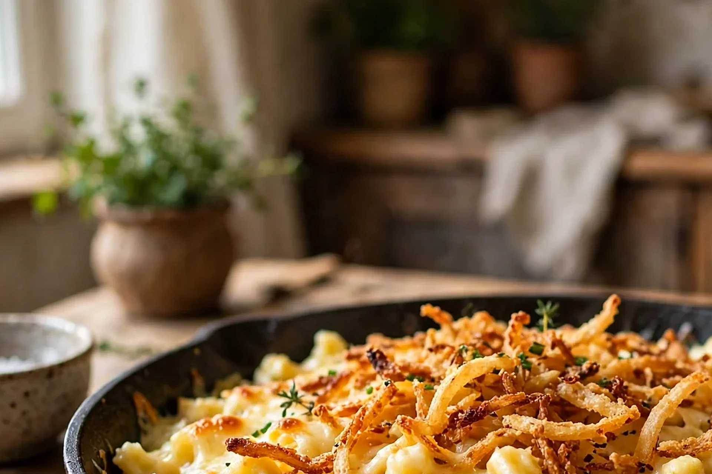

Käsespätzle – mit viel Käse und Röstzwiebeln
Käsespätzle sind für uns pures Wohlfühlessen: weiche Spätzle, dazwischen schmelzender Bergkäse und obendrauf knusprige Röstzwiebeln. Ein grüner Salat dazu – mehr braucht es nicht für einen gemütlichen Abend.

Inhaltsverzeichnis
Zutaten
Zubereitung
- Mehl, Eier, Wasser, Salz und Muskat zu einem zähflüssigen Teig verrühren, bis er Blasen wirft. Ca. 10 Minuten ruhen lassen.
- Die Zwiebeln in feine Ringe schneiden und in der Butter bei mittlerer Hitze in ca. 10 Minuten langsam goldbraun rösten. Beiseitestellen.
- Reichlich Salzwasser zum Kochen bringen. Den Teig portionsweise durch eine Spätzlepresse oder einen Spätzlehobel ins Wasser geben.
- Sobald die Spätzle oben schwimmen, mit einer Schaumkelle herausnehmen und gut abtropfen lassen.
- Den Backofen auf 200 °C Ober-/Unterhitze vorheizen. Spätzle und Käse abwechselnd in eine gefettete Auflaufform schichten, dabei leicht mit Salz und Pfeffer würzen.
- Die Käsespätzle im Ofen ca. 8–10 Minuten überbacken, bis der Käse geschmolzen ist und Fäden zieht.
- Mit den Röstzwiebeln und Schnittlauch bestreut servieren – dazu passt ein grüner Salat.

Tipp
Für besonders cremige Käsespätzle 2–3 EL heißes Spätzlewasser zwischen die Schichten geben. Zwei Käsesorten gemischt – eine milde und eine würzige – geben den besten Geschmack.
📌 Mehr Rezept-Ideen findest du auf unserem Pinterest-Profil:
Lecker Rezepte auf Pinterest
Lecker Rezepte auf Pinterest